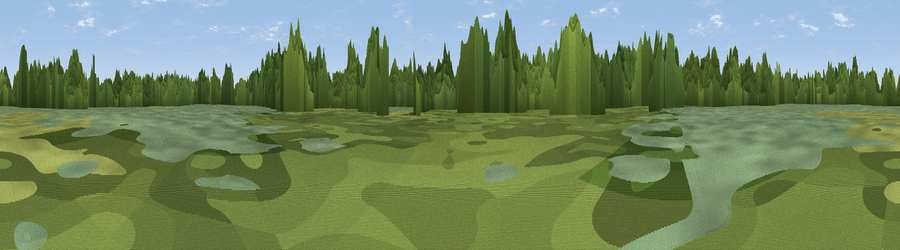

Northern Reedbeds Hide
#42311 in England · top 19% of its area beats it · near Ramsey HeightsThe view, rendered

A 360° render of this exact spot computed from the terrain model, tree cover and land cover — summer colours, afternoon light, calibrated against photographs of famous viewpoints. Real trees, hedges and buildings will differ in detail.
The panorama
Grey silhouette: terrain skyline in each direction (720 bearings, Earth curvature and refraction included). Dashed green: skyline with trees (+15 m) and buildings (+8 m) as obstacles. Blue strip: how far the ground is visible on each bearing.
Where the view opens
Wedge length = distance to the farthest visible ground on that bearing (vegetation-aware). Rings at 10, 25 and 50 km.
What fills the view
37% woodland · 24% wetland · 21% cropland · 18% grassland ·
Angular shares of the visible panorama (visual magnitude), not map area. Landscape diversity 0.60 (0–1 Shannon).
Key numbers
More beautiful places nearby
The staircase of upgrades: each row has a higher view potential than everything closer. Driving times are estimates from straight-line distance, calibrated against real road routing — check an actual route before setting out.
| Place | Direction | Drive | Score |
|---|---|---|---|
| Viewpoint near Woodwalton | S · 5 km | ~11 min | 29.3 |
| Viewpoint near Sawtry | WSW · 7 km | ~14 min | 38.0 |
| Viewpoint near Chesterton | NW · 14 km | ~25 min | 43.0 |
| Viewpoint near Duddington | NW · 26 km | ~42 min | 43.8 |
| Viewpoint near Finedon | WSW · 35 km | ~53 min | 47.5 |
| Viewpoint near Toft | NNW · 35 km | ~53 min | 49.0 |
| Viewpoint near Harlton | SSE · 37 km | ~56 min | 49.6 |
| Viewpoint near Stapleford | SE · 41 km | ~61 min | 54.8 |
52.45282, -0.18966 · source: osm viewpoint · position refined by local search. Computed location — check access rights before visiting.